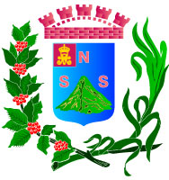

- Extensión territorial: 1653 km²
- Idioma: Español
- Tradiciones: 1.La pesca en la libertad
2.El baile de los cumpas
.
- Alcalde: MIGUEL JIMÉNEZ.
- Poblacion: 660,652 hab.
- Fiestas patronales: fiestas patronales se llevan a cabo en el mes de diciembre
- Productos artesanales: Artesanias
- Sitios turísticos: 1.El Puerto de la libertad
2.Playa San Diego
- Mapa
- Santa Ana
- Sonsonate
- Usulutan
- San Miguel
- Morazan
- La Union
- La Libertad
- Chalatenango
- Cuscatlan
- San Salvador
- La Paz
- Cabañas
- San Vicente